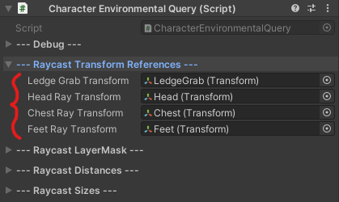
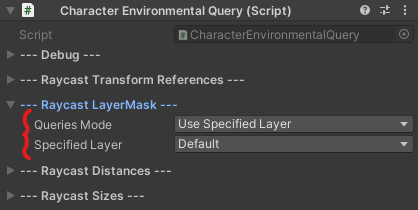
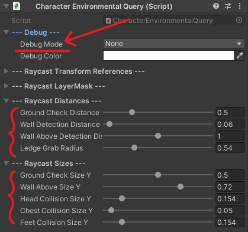

Quickly jump through sections:
- Understanding the System
- Setting up the Component - Transform References
- Setting up the Component - Collision Layers
- How it Works
Understanding the System
The collision queries in the asset are handled by the CharacterEnvironmentalQuery component. It provides the locomotion and combat systems with essential information about the environment surrounding the character. This information allows these systems to determine how the character can behave in the environment. Consequently, the configuration of this component significantly influences the behaviour logic of these systems. Fine-tuning the component needs time and patience. The default values can work well with characters that are that are approximately 1.64 Unity units tall and 0.72 Unity units wide.
Setting up the Component - Transform References
Although the component comes pre-configured within the CharacterTemplate prefab and the provided characters within the asset, it's beneficial to understand how it's set up. For proper functionality, it needs the following references:
-
Ledge Grab Transform:
This should be an empty GameObject, a child of the root object with the component attached. It helps the component identify the preferred position relative to the character for searching a ledge, which is crucial for the Ledge Grab/Climb mechanics. -
Head/Chest/Feet Transforms:
These should also be empty GameObjects, children of the root object with the component attached. They determine the positions of the respective parts of the character. By correctly positioning these transforms, the CharacterEnvironmentalQuery will produce more accurate results.
By correctly positioning these transforms, the CharacterEnvironmentalQuery will produce more accurate results.

Setting up the Component - Collision Layers
The component allows you to specify which layers the queries should interact with. You have two options for setting the layers:
-
Use Specified Layer
This option lets you pick the layers that the component will consider. -
Exclude Character
With this option, the component will perform casts against all layers except the one the character is set to.
Based on your selected setup, the component will conduct its checks only within the specified layers. This will affect how the mechanics as well as the systems within the asset operate.

How it Works
When the component queries the environment, it takes into account the character's active collider.
This allows the component to remain independent of the character's size, ensuring it works with any size with the same precision. All "size" properties in the inspector represent a percentage based on
the collider's size and position.
For instance, setting a "Size Y" value to 0.5f means the cast size will be 50% of the character's active collider size. This ensures
consistency in queries even if the character's collider size is changed later after fine-tuning the component's values.
In contrast, distances are calculated in units, as expected. For example, if you set a "Distance" value to 1.0f, the cast will be 1 Unity unit away
from the character.
You can always visualize the casts through the "Debug" section of the component for better clarity and troubleshooting.
